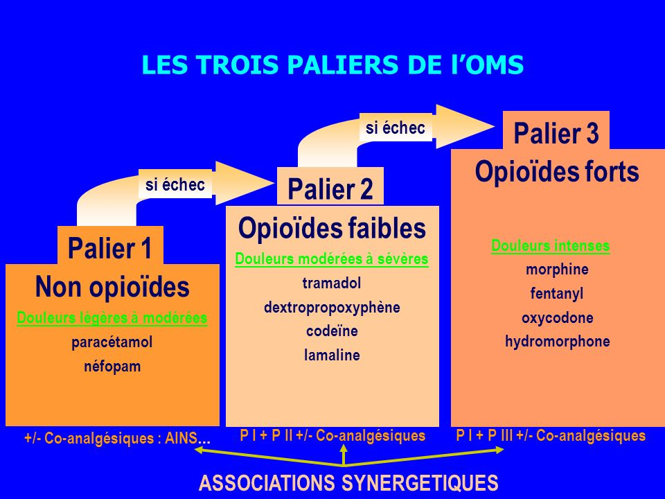

Propriétés pharmacologiques de la morphine et expression de la douleur
Avant de pouvoir expliquer comment la morphine diminue la douleur d’un patient, nous allons voir comme notre corps reconnaît la douleur et le message qu'elle veut porter à notre organisme :
La douleur, c'est tout d'abord une sensation pénible, désagréable que l'on peut caractériser de chronique ou aiguë. Elle est le résultat de la stimulation des terminaisons nerveuses (les branches et segments des nerfs, appelés terminaisons nerveuses libres, se situent dans le derme (couche profonde de la peau, recouverte par l'épiderme). Ils sont étroitement imbriqués dans le derme et couvrent toute la surface de la peau. Les terminaisons nerveuses libres enregistrent les sensations, surtout la douleur) qui transmettent, par le biais des cellules du système nerveux, un signal au cerveau. Il est peut être facile de détecter sa localisation mais il est plus délicat d'en connaître la cause.
La définition officielle de la douleur nous vient de L'I.A.S.P (International Association for Study of Pain) pour qui la douleur est « une expérience subjective sensorielle et émotionnelle désagréable associée à un dommage tissulaire présent ou potentiel, ou décrite en terme d'un tel dommage » Elle est confirmée par l'O.M.S (Organisation Mondiale de la Santé).
On peut classer la douleur en deux grandes catégories :
-La douleur aiguë : C'est une douleur vive, immédiate qui se caractérise par des lésions tissulaires (bleus, plaies, brûlures, coupures...) C'est une sensation déclenchée par le système nerveux pour alerter l'ensemble de l'organisme. Elle est relativement utile car elle nous permet de réagir (stopper l'effort, éviter une blessure plus importante...) La guérison se fait en moins de 6 mois pendant lesquels les lésions vont se réduire jusqu'à la disparition de la douleur.
-La douleur chronique : L'être humain possède des circuits protecteurs contre la douleur. Cependant, il arrive que ce système se dérègle et que le message de la douleur continue à être envoyé au cerveau alors que la lésion de départ est soignée. Lorsque la douleur persiste au delà de 6 mois, on la caractérise de douleur chronique. Elle affecte considérablement le comportement et le bien être de la personne atteinte. Cette douleur devient alors une pathologie qui doit être traitée comme telle.
Lorsqu'on provoque des stimulis douloureux de même intensité chez deux personnes, celles-ci peuvent réagir de manières très différentes. L'une peut avoir extrêmement mal, alors que l'autre ne peut ressentir qu'une légère douleur.
En effet la perception de la douleur dépend de la personne en elle-même. Le ressenti de celle-ci peut être nuancé en fonction de son passé, de sa résistance ou encore, en fonction de son caractère. La douleur est donc une expérience subjective, difficile à exprimer par le patient. L'intensité d'une douleur est alors délicate à évaluer correctement par le personnel soignant.
Il existe trois types de mécanisme :
-Neuropathique : Cette douleur résulte d'un dysfonctionnement du système nerveux. Cela peut être dû à une lésion au niveau des nerfs qui sont chargés de détecter la douleur ou bien à une atteinte du système nerveux central qui s'occupe de la transmission des signaux de la douleur ( moelle épinière, cerveau...) La morphine agit bien sur ce type de douleur, mais elle n'est pas forcément le meilleur des antalgiques.
-Psychogène : On regroupe sous ce terme toutes les douleurs que l’on n’arrive pas à classer dans les autres catégories. Ce sont des douleurs sans lésions apparentes et auxquelles on ne trouve pas, malgré un bilan médical approfondi, de raison valable. Il semble probable qu'elles soient le résultat d’un mal-être plus moral que physique, même si elles sont bien réelles. Dans ce cas là, la prescription de morphine n'est d'aucune utilité.
-Nociceptive : La douleur résulte de stimulations excessives des récepteurs périphériques qui transmettent un signal de douleur au cerveau par le système nerveux. C’est la plus fréquente car elle correspond aux maux habituels : coups, brûlures, inflammations, fractures…
La douleur nociceptive aiguë est le type de mécanisme où la morphine a le plus d'effet. Donc c'est de cette description que nous allons développer.
La douleur nociceptive aiguë est le type de mécanisme où la morphine a le plus d'effet. C'est donc de cette description dont nous allons parler.
Le cheminement de la douleur nociceptive se fait en de nombreuses étapes, de la stimulation à la conception de la douleur.
Tout d'abord, la première étape est l'excitation d'un nocicepteur par une agression de l'organisme. Cette stimulation provoque un message nerveux que l'on peut comparer à une sorte de courant électrique.
Ce message parcourt la dendrite, partie antérieure du neurone sensitif, qui est aussi appelé neurone en T à cause de sa morphologie. Son corps cellulaire est logé dans le ganglion spinal, se situant dans la racine postérieure de la moelle épinière. La dendrite de ce neurone rentre donc dans la corne postérieure de la moelle épinière puis l'axone (la partie postérieur du neurone ) continue jusqu'à la substance grise de la moelle épinière.
C'est à cet endroit que s'effectue le premier relais synaptique Ici, se produit alors un mécanisme chimique. En effet une synapse est caractérisée par une fente de 20 à 50 nm qui sépare la cellule présynaptique de la cellule post-synaptique. Cependant le message nerveux ne peut pas franchir cet obstacle directement, son arrivée à l'extrémité de l'axone libère deux sortes de substance chimiques: Ces substances sont appelées des neurotransmetteurs. Dans ce type de relais synaptique, elles s'appellent « substance P » et « glutamate » et assurent la liaison synaptique. Plus la douleur sera forte, plus la quantité de neurotransmetteurs libérée sera importante. Une fois libérés, ceux-ci traversent la fente pour se fixer sur des récepteurs spécifiques, propres à un type de substance. Ils sont situés sur le corps cellulaire du neurone post-synaptique. Une fois fixés, le neurone post-synaptique fait renaître un message nerveux sous forme de courant électrique.
C'est lors de ce relais que le corps réagit pour la première fois : il y a un mouvement réflexe .
Le message nerveux continue alors son chemin jusqu'au centre du cerveau via l'axone de ce dernier neurone.
Il y a encore un dernier relais synaptique au niveau du thalamus, qui se trouve au centre du cerveau. Ce dernier s'effectue sur le même plan que celui de la moelle épinière. Enfin, après le mécanisme chimique et la renaissance du message nerveux dans le neurone post-synaptique, l'axone de ce dernier va jusque dans une zone en périphérie du cerveau qui se nomme le cortex cérébral.
C'est ici que naît la perception de la douleur.
Nous allons pouvoir désormais parler des propriétés de la morphine et de son action sur l'organisme : La morphine une fois injectée met à l'épreuve la tolérance qui est l'aptitude de l'organisme à supporter une substance sans manifestation nocive et peut créer une dépendance qui est un assujettissement à une drogue, à une substance toxicomanogène, se manifestant lors de la suppression de cette dernière par un ensemble de troubles physiques et/ou psychiques.
La morphine est un composé dont la pharmacologie est une des mieux connues et explorées. La pharmacologie est une discipline scientifique du vivant, subdivision de la biologie, qui étudie les mécanismes d'interaction entre une substance active et l'organisme dans lequel elle évolue, de façon à pouvoir ensuite utiliser ces résultats à des fins thérapeutiques, comme l'élaboration d'un médicament (principalement) ou son amélioration. Les nombreux effets de la morphine conditionnent ses nombreuses applications thérapeutiques.
La biodisponibilité d’un médicament correspond à la fraction (plus ou moins importante) du médicament administré qui atteint la circulation sanguine et qui va avoir un effet pharmacologique.
En pratique, un même médicament peut exister sous deux présentations galéniques : la gélule et le comprimé à libération prolongée. La biodisponibilité ne sera par conséquent pas la même.
Nous allons voir les différentes parties de la pharmacologie :
I-Pharmacodynamie : La Pharmacodynamie est une partie de la pharmacologie qui a pour objet l'étude de l'action exercée par les médicaments sur l'organisme.
a)paliers d'antalgique :

La morphine a des effets divers, cependant, elle est utilisée principalement pour ses effets antalgiques. En effet elle permet d’atténuer les douleurs. Dans les hôpitaux, on trouve différents paliers d’antalgiques pour différents niveaux de douleur. On utilise ce système pour donner un antalgique adéquat aux symptômes présentés par le patient.
Il existe 3 différents paliers d'antalgiques.
Quand l’antalgique de palier 1 est insuffisant, on fera appel aux antalgiques de palier 2 et si ceux-ci sont inefficaces on utilisera les antalgiques de palier 3.
b)Les voies d'administration :
La voie digestive ou entérale correspond à la voie orale. Lorsqu’on avale un comprimé, il arrive dans l’estomac et sa digestion va commencer : le comprimé se délite, se désagrège et se dissout. Une partie du principe actif peut commencer à passer à travers la paroi de l’estomac pour rejoindre la circulation sanguine, une autre partie continue sa route dans l’intestin avant d’être absorbée pour rejoindre la circulation sanguine (via la veine porte). Avant que le principe actif ne se répartisse dans tout le corps pour y exercer son action, il va passer par le foie et y être en partie transformé voire éliminé : il s’agit de l’effet de « premier passage hépatique ».
la voie parentérale regroupe toutes les injections (intraveineuse, intramusculaire ou sous-cutanée). Le principe actif atteint la circulation sanguine et se répartit directement sans passage obligé par le système porte et le foie, sans subir l’effet de premier passage hépatique. On dit que le principe actif est plus biodisponible que par voie orale : la vitesse d’action et/ou la quantité de médicament qui agit (ou les deux) est plus importante. L’absorption sera plus ou moins complète et plus ou moins rapide en fonction des propriétés physico-chimiques des médicaments.
les autres modes d'administration sont :
-la voie transcutanée (patchs, pommades)
-la voie sublinguale (spray, comprimé orodispersible)
-la voie rectale (suppositoires) : La voie rectale présente les mêmes caractéristiques que la voie orale mais elle permet d’éviter en partie un éventuel effet de premier passage hépatique dans la mesure où les veines hémorroïdales inférieures et moyennes ne rejoignent pas le système porte.
La voie sublinguale permet une absorption très rapide mais limitée compte tenu de la faible surface d’absorption. Les médicaments, une fois la paroi capillaire franchie, atteignent directement la circulation générale.
D’autres modes d’administration locale (collyres, sprays bronchiques) sont surtout utilisées lorsqu’on veut éviter un effet systémique (passage dans la circulation générale) ou que ce dernier n’est pas indispensable. Toutefois un passage systémique du médicament est toujours possible.
Nous allons maintenant décrire précisément le trajet de la morphine par voie parentérale (injection) :
Le délai d’action est très rapide, environ 5 min. Ce délai est rapide étant donné que la morphine atteint la circulation sanguine et sans passage obligé par le système porte et le foie, sans subir l’effet de premier passage hépatique
En effet lors d’un stimulus douloureux, il y a création d’un message nerveux, véhiculé jusqu'à la moelle épinière par des fibres nerveuses afférentes, qui se regroupent pour former les nerfs. Une fois le message nerveux à la moelle épinière, la morphine va se fixer sur les récepteurs de la membrane des neurones nociceptifs post-synaptiques. Ces récepteurs sont appelés les récepteurs opioïdes et sont localisés sur les neurones de la moelle épinière. Ils permettent de contrôler la douleur en inhibant, comme le font les molécules d’enképhalines et en exerçant un blocage presque total de l’émission des
messages nociceptifs véhiculés par les nocicepteurs des neurones transmetteurs.
Les enképhalines sont des endorphines fabriquées par le corps.
La morphine endogène et les opiacés d’une manière générale sont capables de se fixer sur les mêmes récepteurs que les enképhalines, car ils possèdent une région de leur structure moléculaire semblable à celles des enképhalines. Néanmoins, même si la structure de la morphine et des enképhalines est semblable, l’activité analgésique de la morphine est plus puissante et dure plus longtemps, car contrairement aux molécules d’enképhalines, la molécule de morphine n’est pas dégradée, c'est à dire qu'elle se détériore beaucoup moins rapidement.
Les messages nociceptifs sont conduits par les faisceaux de neurones ascendants dans les différentes aires cérébrales impliquées dans le mécanisme de douleur.
La partie semblable de la molécule de morphine à celle de l'enképhaline va se fixer sur les récepteurs opioïdes et ainsi simuler l'action de l'enképhaline. C'est-à-dire qu’en mimant la libération d'enképhaline et leur fixation sur les récepteurs aux opiacés situés dans certaines régions du cerveau comme par exemple le système limbique (partie du cerveau responsable des émotions, sensations de plaisir…). La morphine va freiner l’activité de ces
neurones inhibiteurs en empêchant la sécrétion de GABA ce qui va alors lever l’effet restrictif qu’exerce le neurone à GABA sur le neurone à dopamine. Les neurones à dopamine seront moins inhibés, la production de dopamine va augmenter, car les neurones inhibiteurs ne vont plus freiner l'activité des neurones à dopamine des
circuits de récompense. Cette surproduction de dopamine va être à l’origine de la sensation d’euphorie, car la dopamine est un neurotransmetteur dont la sécrétion provoque cette sensation.
Cette sensation d’euphorie est due au fait que la morphine exerce une action plus puissante que celle des enképhalines. Elle rend l'inhibition de l'activité des neurones inhibiteurs plus importante. Et crée par conséquent, une libération de dopamine plus importante, ce qui provoque une sensation de plaisir supérieure à celle des enképhalines.
II-Pharmacocinétique
La Pharmacocinétique est l'étude du devenir des médicaments dans l'organisme.
La morphine subit un effet de premier passage hépatique important, c'est-à-dire qu'elle est beaucoup dégradée quand elle entre dans le foie après avoir été absorbée par les capillaires sanguins du système porte (dans l'intestin et l'estomac) et possède donc une
biodisponibilité limitée
(de l'ordre de 30%) lorsqu'elle est prise par voie orale.
La pharmacocinétique de la morphine influence beaucoup ses effets car certains de ses métabolites sont actifs.
La voie orale est privilégiée. Le médicament est ainsi libéré progressivement dans l’organisme, alors que la toxicomanie est favorisée par une libération brutale de doses importantes de médicament.
a)Effets indisérables
La morphine possède de nombreux effets secondaires qui vont de pair avec sa grande efficacité. -Des troubles digestifs
-Des troubles neurologiques ou d'origine neurologique (centrale)
-Des troubles hormonaux
-Des nausées/vomissements
-Des somnolences
-Des hallucinations,cauchemars et confusion mentale
En cas d'administration de longue durée, certains symptômes comme les nausées cessent, tandis que d'autres comme la constipation, perdurent et doivent être traités.
b)Surdosage (overdose) et toxicité
Le surdosage de morphine, à l'instar des autres opioïdes, est une urgence médicale et un événement grave dont les symptômes sont l'apparition d'un état de somnolence, d'hypothermie et
d'hypotension et rapidement une dépression respiratoire.
En l'absence de traitement, et en fonction de la sévérité des symptômes, de la dose absorbée et de nombreux paramètres, la plupart des cas évoluent vers la dépression cardio-respiratoire généralisée, puis rapidement vers le décès par
hypoxie cérébrale.
Si le traitement est entrepris trop tard, des lésions peuvent survenir.
c)Accoutumance et addiction
La morphine est une substance fortement addictive. mais l'accoutumance à la morphine et son addiction sont des phénomènes qui dépendent de nombreux facteurs :
-l'âge
-le sexe
-le métabolisme
-les doses employées
-la durée de traitement
-la susceptibilité individuelle :
notamment à des facteurs d'origine génétique.
Comme la plupart des opioïdes, et par des mécanismes complexes et encore mal connus, les individus qui consomment de la morphine développent une accoutumance aux effets de la morphine comme la nausée, l'analgésie ou l'euphorie.
Cette accoutumance implique, selon un mécanisme circulaire, l'augmentation des doses.
Les récepteurs à la morphine se modifient, dans leur structure lors de son administration fréquente, ils sont moins efficaces pour recevoir la morphine et pour transmettre le signal.
Ainsi, lors de l'arrêt de la morphine, les endorphines naturelles ne suffisent plus pour activer les récepteurs comme elles le devraient.
Cette accoutumance provoque des effets comportementaux comme la recherche de plus de substance pour assouvir ses besoins.
Comme tout opiacé, la morphine provoque une dépendance physique et est susceptible de provoquer une dépendance psychologique dans certains contextes précis hors du contexte médical.
Elle est habituellement prévenue par la mise en adéquation des doses avec le besoin, notamment à travers une évaluation régulière du symptôme douloureux, la prise à heure fixe, et par la rotation des opioïdes. En effet, lorsque l'on change de molécule en lui substituant un composé de profil similaire, au sein de la même classe thérapeutique (ici, les opiacés) et en respectant les équivalences, il s'agit d'une rotation.
Son usage est fréquent parmi les populations de toxicomanes précaires, majoritairement dans des contextes de polyconsommation et de polytoxicomanie. Elle est alors souvent obtenue illégalement et/ou broyée pour être injectée. Dans ce contexte de détournement récurrent, les associations promouvant la réduction des risques et l'accompagnement des toxicomanes en France ainsi que des addictologues demandent l'obtention d'une Autorisation de Mise sur le Marché (AMM) de la morphine comme traitement de substitution, et l'autorisation de nouvelles galéniques particulièrement injectables dans un contexte de risque sanitaire important.
Dans quel cas la morphine est-elle administrée?
Nous venons de voir les effets de la morphine sur l'organisme, nous allons maitenant énumérer les cas dans lesquels celle-ci est administrée à un patient.
-La morphine est d'abord utilisée quand le patient ressent une douleur intense et que les précédents paliers d'antalgique ne sont pas suffisants pour soulager cette douleur.
-Mais la morphine est aussi administrée aux patients en fin de vie (en phase terminale de cancer par exemple) pour maintenir la qualité des périodes de fin de vie.
Cette perfusion apporte à ces patients un confort majeur et leur permet de partir en paix.
Dans ce cas la morphine est utilisée pour soulager et en aucun cas dans un but d'euthanasiant pour précipiter la mort.